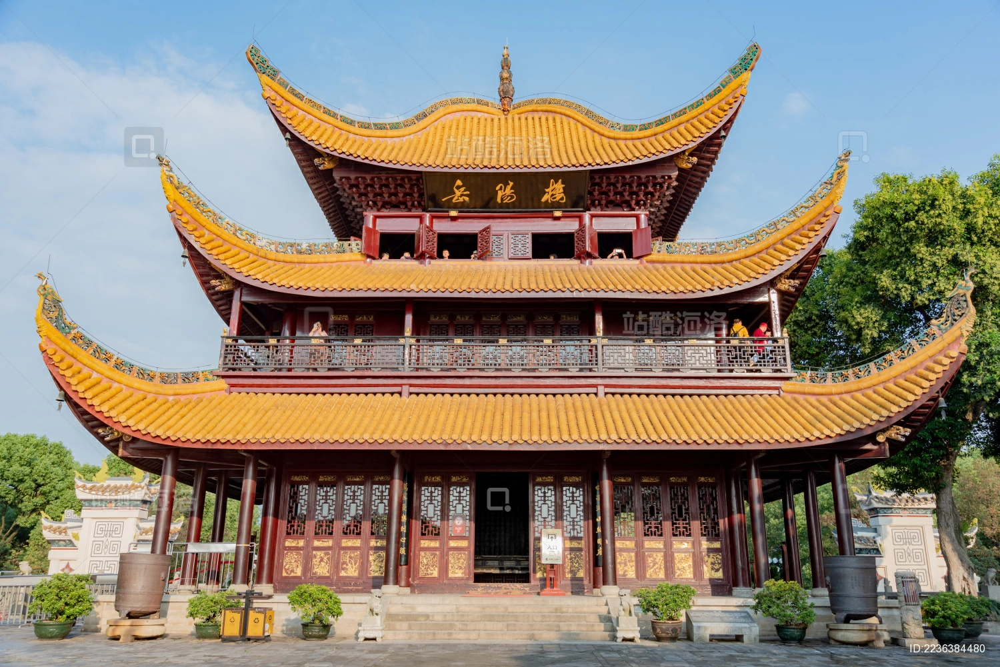
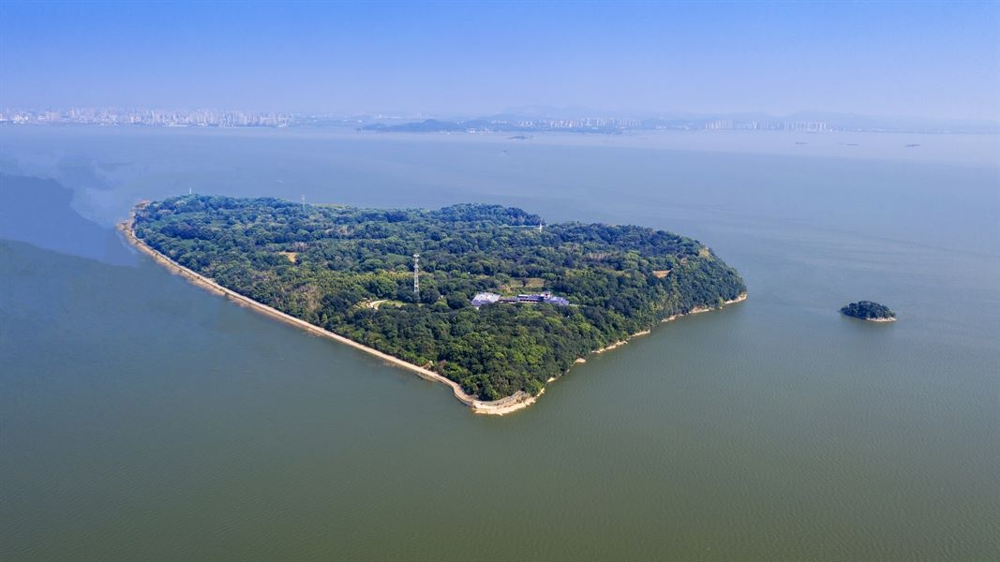

洞庭湖
洞庭湖，古称云梦、九江和重湖，位于长江中游荆江河段南岸，湖北省南部、湖南省北部。 经过地质运动和人类活动的双重作用，洞庭湖现已分割成东洞庭湖、南洞庭湖、西洞庭湖， 三湖之间通过河网湖沼和洪道连接。

岳阳楼
岳阳楼，地处岳阳古城西门城墙之上，紧靠洞庭湖畔，下瞰洞庭，前望君山； 自古有“洞庭天下水，岳阳天下楼”之美誉，与湖北武汉黄鹤楼、江西南昌滕王阁并称为“江南三大名楼”， 是“中国十大历史文化名楼”、古代四大名楼之一，世称“天下第一楼”。

君山岛
君山自然风光秀丽，春赏奇花异草，夏观浩瀚洞庭，秋赏渔歌秋月，冬观湿地候鸟。君山是旅游度假的天堂，避暑休闲的胜地。
汴河街
街道全长近一华里，总建筑面积18000平方米的汴河街成为目前国内仿古建筑最逼真，设计功能最全，文化底蕴最厚，沿湖风景最美，面积最大的一条传统风貌商业街。